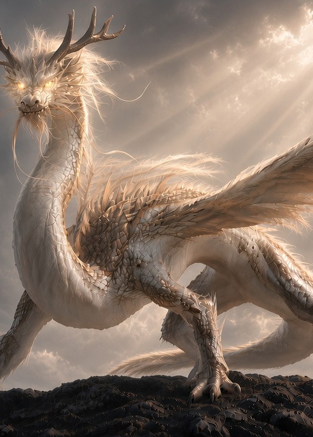
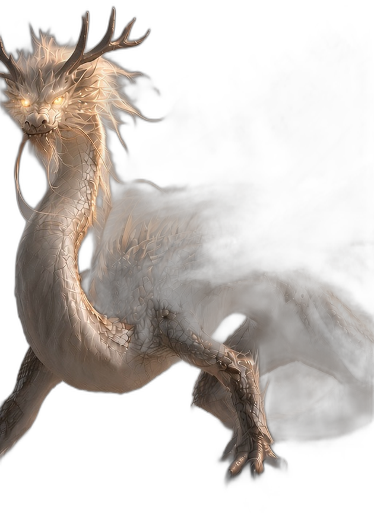

应龙传说
有翼之龙。助黄帝杀蚩尤与夸父，处南极；旱时仿其形，乃得大雨。
《山海经·大荒东经》 / 《大荒北经》YL-001 ★★★

① 应龙传说彩虹镭射 · 神性光 · 龙头破框
霜晶龙HP 120
冰棱吐息 · 60令对手的下一回合无法撤退。彩虹镭射只在极光夜空里流动，龙头探出卡框。
All-in-one · Rainbow001/004 ★★
② 霜晶龙稀有彩虹镭射 · 只闪插画 · 龙头破框
焰尾狐HP 90
流星焰 · 40×掷 3 次硬币，每次正面造成 40 点伤害。亮片只在晚霞里闪，狐耳探出卡框。
All-in-one · Sparkle002/004 ★★★
③ 焰尾狐传说闪光星点 · 只闪插画 · 狐耳破框
星尘狐HP 90
流星雨 · 40×亮片只在卡缘一圈闪，插画保持哑光；星辰徽记浮在窗口前方。
All-in-one · Border003/004 ★★
④ 星尘狐稀有闪光星点 · 只闪边框 · 徽记浮层
金曜狮王HP 250
王者咆哮 · 200反闪：卡框与文字区拉丝金箔，插画保持哑光；烈日徽记浮在窗口前方。
All-in-one · Inverse004/004 ★★★
⑤ 金曜狮王传说金属拉丝 · 反闪非插画 · 徽记浮层
正在加载 WebGL 渲染器…
悬停倾斜（窗口里的远景有真实景深）· 按住拖动旋转看背面 · 双击翻面